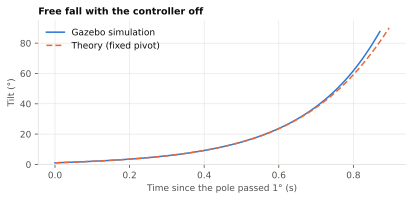
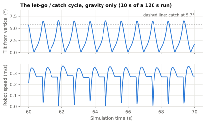
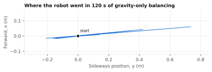
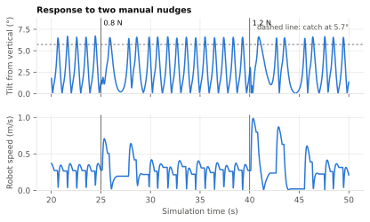

A pole standing upright on a moving robot wants to fall over. This project makes the robot keep it up, the way you can balance a broomstick on your palm by moving your hand under it. Because the robot has mecanum wheels, it can move in any direction, so the pole can fall in any direction and still be caught.
The work so far is a simulation. The next step is running it on a real LIMO in a motion-capture (mocap) room.
| Item | Value | Item | Value |
|---|---|---|---|
| Pole | 0.5 m rod, 0.1 kg, plus 0.1 kg ball | Control rate | 200 Hz (every 5 ms) |
| Physics step | 1 ms | Time for a tilt to grow by a factor of e | 0.21 s |
| Cycle period | about 0.95 s | Peak tilt in the cycle | about 6.7° |
| Speed in the cycle | 0.27 m/s average, 0.72 m/s peak | Speed limit | 2 m/s |
| Strongest push survived in all directions | 1.2 N at the top of the pole | Floor space in 120 s (one run) | 0.74 m from start |
| File | What it does |
|---|---|
omni_pendulum_sim/ | The controller: reads the pole's angles, commands the base's velocity |
omni_pendulum_sim/ | Simulation only: the start-up nudge and manual pushes |
omni_pendulum_sim/ | Optional terminal arrow-key input |
launch/ | Starts everything with one command |
urdf/ | The robot model and its Gazebo plugins |
worlds/ | The simulated world |
config/ | Gazebo window layout, closer camera, key-press plugin |
meshes/ | Simplified LIMO 3D shapes |
setup.py, setup.cfg, package.xml, resource/ | ROS 2 package build files |
test/ | Code style tests (flake8, pep257) |
This part explains every concept the rest of the guide relies on. If you already know ROS 2 and Gazebo, skip to Part 3.
ROS 2 (Robot Operating System 2) is not really an operating system. It is a set of libraries and tools that lets separate programs on a robot exchange data. This project uses the Jazzy release, which is the one built for Ubuntu 24.04.
| Concept | Meaning | In this project |
|---|---|---|
| Node | One running program with one job | balance_controller, disturbance |
| Topic | A named channel. Anyone can publish to it or subscribe to it, without knowing who is on the other end | /cmd_vel, /joint_states |
| Message | The typed data sent on a topic | geometry_msgs/Twist holds linear and angular velocity |
| Publisher / subscriber | A node's sending and receiving ends. A subscriber runs a callback function for each message | The controller's joint_callback |
| Parameter | A setting of a node that can be changed without editing code | catch_tilt_rad |
| Package | A folder of code and files that gets built and installed as a unit | omni_pendulum_sim |
| Workspace | A folder containing packages (src/) and their build results | ~/omni_pendulum_ws |
| colcon | The build tool. It creates build/, install/ and log/ | colcon build |
| Sourcing | Running a setup.bash file so the current terminal can find ROS and your packages. Every new terminal needs it | source install/setup.bash |
| Launch file | A Python file that starts many programs at once | sim.launch.py |
| TF | A system tracking where every part of the robot is relative to the others | Published by robot_state_publisher |
| Simulation time | Nodes read the clock from the simulator instead of the computer, using use_sim_time | /clock |
A minimal node looks like this. The project's nodes follow the same pattern:
class MyNode(Node):
def __init__(self):
super().__init__('my_node') # name on the ROS network
self.create_subscription(JointState, '/joint_states', self.cb, 10) # 10 = queue size
self.pub = self.create_publisher(Twist, '/cmd_vel', 10)
def cb(self, msg): # runs for every message received
self.pub.publish(Twist()) # publishes a zero velocity
rclpy.init(); rclpy.spin(MyNode()) # spin: wait for messages and call the callbacks
Gazebo Harmonic is a robot simulator: it computes gravity, contacts and friction, and draws the result. ROS 2 Jazzy is paired with it. Older tutorials use “Gazebo Classic”, whose plugins do not work here, which matters later when importing the LIMO.
| Concept | Meaning |
|---|---|
| World | The environment: physics settings, light, ground, and the robots in it |
| Model | One object in the world, such as our robot |
| Link | A rigid body. It has inertial properties (mass), a visual shape (what you see) and a collision shape (what the physics touches) |
| Joint | A connection between links: fixed (rigid), revolute (hinge with limits) or continuous (hinge without limits, like an axle) |
| System (plugin) | Code added to the simulation. Examples: MecanumDrive turns velocity commands into wheel speeds; JointStatePublisher reports joint angles |
| Server and GUI | The server computes physics; the GUI is the window. They can run together or separately |
| Gazebo Transport | Gazebo's own message system. It is similar to ROS topics but separate from them |
| Real-time factor | Simulated seconds per real second. Below 1 means the computer can't keep up, and the simulation runs in slow motion |
| Format | What it is | Used for |
|---|---|---|
| URDF | ROS's XML description of a robot: links and joints | The robot |
| xacro | URDF plus variables, maths and macros. It expands into plain URDF | robot.urdf.xacro |
| SDF | Gazebo's native format, which can also describe whole worlds. Gazebo converts URDF to SDF when spawning | balance_world.sdf |
ROS 2 and Gazebo use different message systems, so a topic in one is invisible to the other.
ros_gz_bridge translates selected topics. Each is declared in the launch file like this:
/cmd_vel@geometry_msgs/msg/Twist]gz.msgs.Twist topic ROS message type | Gazebo message type ] means ROS to Gazebo [ means Gazebo to ROS
A pole balanced upright is in an unstable equilibrium. At exactly 0° gravity has no sideways effect, but any tiny tilt lets gravity pull it further, which increases the tilt, and so on. The tilt grows exponentially.
To catch it, the base must accelerate toward the fall. An acceleration under the pole's pivot produces a turning effect on the pole that opposes gravity's. Moving at a constant speed does nothing; the pole only feels acceleration, just as you only feel pushed back in a car while it speeds up. This is the most important idea in the controller.
It also explains the counter-intuitive part: to stop, the robot must first let the pole lean slightly backwards, or the deceleration would throw the pole forward.
A mecanum wheel has small angled rollers around its rim, so it pushes the robot along a diagonal instead of straight ahead. With diagonals arranged in an X, combinations of wheel speeds produce motion in any direction:
Top view, robot front at the top. Blue arrows: each wheel's spin direction. Black arrow: the resulting robot motion. FL, FR, RL, RR = front-left, front-right, rear-left, rear-right.
The exact rule, for wheel radius r and k = half of (wheelbase + wheel separation):
On a pure diagonal (vx = vy), FL and RR are zero, so only two wheels do the work. This is why the diagonal turned out to be the robot's weakest direction in testing.
Follow the official instructions at docs.ros.org/en/jazzy/Installation.html to install ROS 2 Jazzy.
Then install what this project needs:
sudo apt install ros-jazzy-ros-gz ros-jazzy-xacro ros-jazzy-robot-state-publisher \
python3-colcon-common-extensions git
git clone https://github.com/Surya-ganesh5353/omni_pendulum_ws.git ~/omni_pendulum_ws
The repository is a complete workspace: the package is already in src/.
source /opt/ros/jazzy/setup.bash # make ROS available in this terminal cd ~/omni_pendulum_ws colcon build --symlink-install # build the workspace source install/setup.bash # make this package available too
--symlink-install links to your source files instead of copying them, so edits to Python, launch, URDF, world
and config files apply at the next launch without rebuilding. Rebuild only after adding a new file or program.
ros2 launch omni_pendulum_sim sim.launch.py
| Launch option | Effect |
|---|---|
gui:=false | No Gazebo window (used for automated tests) |
balance:=false | No controller, so you can watch the pole fall |
push:=false | No disturbance node: no start-up nudge and no manual nudges, so the pole stays upright |
Stop with Ctrl+C in the launch terminal. Closing only the window can leave processes behind.
| Method | How |
|---|---|
| Gazebo window | Click the 3D view, then use the arrow keys. ↑/↓ = forward/back, ←/→ = left/right, +/- = stronger/weaker (starts at 0.8 N) |
| Terminal | ros2 run omni_pendulum_sim keyboard_nudge (same keys, q quits) |
| Exact force | ros2 topic pub --once /nudge geometry_msgs/msg/Vector3 "{x: 0.5, y: 0.0}" |
This is real output from this project, captured during a test run:
$ ros2 node list
/balance_controller
/disturbance
/robot_state_publisher
/ros_gz_bridge
$ ros2 topic list
/clock /keyboard/keypress /robot_description /tf_static
/cmd_vel /nudge /rosout /world/balance_world/wrench/clear
/cmd_vel_ref /odom /tf /world/balance_world/wrench/persistent
/ground_truth/odom /parameter_events /joint_states
$ ros2 topic info /cmd_vel
Type: geometry_msgs/msg/Twist
Publisher count: 1
Subscription count: 1
$ ros2 param get /balance_controller catch_tilt_rad
Double value is: 0.1
$ gz model --list
Available models:
- ground_plane
- omni_pendulum
(The topic list is arranged in columns here to save space.) Other useful commands:
| Command | Shows |
|---|---|
ros2 topic echo /cmd_vel | Live velocity commands |
ros2 topic hz /joint_states | How often messages arrive |
ros2 param list /balance_controller | All controller settings |
gz topic -l | Topics on the Gazebo side |
colcon test --packages-select omni_pendulum_sim, then colcon test-result --verbose | Runs the code style tests |
Parameters are read when a node starts. To try one without editing code, launch without the controller and start it yourself in a second terminal:
ros2 launch omni_pendulum_sim sim.launch.py balance:=false ros2 run omni_pendulum_sim balance_controller --ros-args -p use_sim_time:=true -p catch_tilt_rad:=0.08
| Controller parameter | Default | Effect |
|---|---|---|
k_theta, k_omega, k_pos, k_vel | 33.4, 7.1, 1.3, 3.1 | Control gains (Part 6) |
engage_tilt_rad | 0.14 (8°) | Free fall before the first catch |
catch_tilt_rad | 0.1 (5.7°) | Tilt that triggers a catch. Larger: bigger swings, less margin |
catch_rate | 0.6 rad/s | Catch at once if the pole moves faster than this |
release_tilt_rad, release_rate | 0.015, 0.1 rad/s | How settled the pole must be before letting go |
max_lean_rad | 0.06 (3.4°) | Most the controller may lean the pole to brake. Keep at 0.05 or more |
max_return_speed | 0.3 m/s | Speed limit of the drive home |
max_accel | 6.0 m/s2 | Must match what the wheels can deliver |
max_vel | 2.0 m/s | Absolute speed limit |
max_tilt_rad | 0.6 (34°) | Give up and stop beyond this tilt |
control_period | 0.005 s | Time between control steps |
| Disturbance parameter | Default | Effect |
|---|---|---|
release_delay, release_force | 4 s, 0.1 N | The single start-up nudge |
key_force, key_force_step | 0.8 N, 0.2 N | Arrow-key push strength |
nudge_duration | 0.15 s | Length of a push |
min_contact_height, max_contact_height | 0.3 m, 0.5 m | Where on the rod a push lands (chosen at random) |
git status # what changed git add README.md src docs # choose what to save git commit -m "Describe the change" git push
| Symptom | Cause and fix |
|---|---|
Package 'omni_pendulum_sim' not found | This terminal isn't sourced: source ~/omni_pendulum_ws/install/setup.bash |
| Robot missing, or “Moved backwards in time” | A leftover Gazebo is running: pkill -f "gz sim", then relaunch |
XML parsing error from xacro | The model file is damaged, often by text pasted into it or an old VS Code tab saved over it. Compare with git diff |
| Arrow keys do nothing in Gazebo | Click the 3D view first, or use keyboard_nudge |
| Yellow QML “Binding loop” warnings | Harmless; they come from Gazebo's own GUI files |
| Gazebo shows “not responding” | Wait a moment. On laptops with two graphics cards, try running Gazebo on the dedicated one |
| Pole falls after a strong push | Expected above about 1.2–1.5 N at the top of the pole |
base_footprint (empty link at ground level; the model's root)
└─ base_joint (fixed)
base_link LIMO chassis, 2.16 kg
├─ 4 × wheel_joint (continuous)
│ wheel_link 0.5 kg each, radius 45 mm
└─ platform_joint (fixed)
platform_link yellow plate on 4 posts, top at 0.266 m
└─ pendulum_mount_joint (fixed)
pendulum_mount small puck; the pivot sits on top, at 0.278 m
└─ pendulum_pitch_joint (revolute, about Y: tips toward +X)
dummy_pitch_link 1 g link between the two hinges
└─ pendulum_roll_joint (revolute, about X: tips toward -Y)
pendulum_link rod + ball, 0.2 kg
Two perpendicular hinges in series form a universal joint, so the pole can tip in any direction. Their damping is almost zero, so nothing holds the pole up except the robot's motion. Each hinge is limited to ±90°.
The shapes and dimensions come from AgileX's limo_ros2 repository, with three adaptations:
Modelling dozens of tiny rollers would be slow and numerically unstable. Each wheel is instead a plain cylinder with anisotropic friction, meaning it differs by direction:
<mu>1.0</mu> full grip along the diagonal fdir1 <mu2>0.0</mu2> no grip across it <fdir1 gz:expressed_in="base_footprint">1 -1 0</fdir1>
That is the net effect of real rollers. The direction is expressed in base_footprint so it doesn't spin with the wheel.
It uses base_footprint rather than base_link because, when URDF is converted to SDF, links joined by fixed joints are merged into
their parent, so base_link stops being a separate link.
| Plugin | Job |
|---|---|
| MecanumDrive | Converts /cmd_vel into four wheel speeds; publishes wheel-based /odom |
| JointStatePublisher | Publishes all joint angles and rates on /joint_states. This is the controller's only sensor |
| OdometryPublisher | Publishes the robot's true motion on /ground_truth/odom, for testing. Wheel odometry can't detect wheel slip; this can |
The world adds Physics, UserCommands (spawning), SceneBroadcaster (drawing) and ApplyLinkWrench (pushing links).
gui.config adds Key Publisher to the window, and moves the camera from 6 m to about 1.6 m away, looking along +X, so screen-up is robot-forward.
| Quantity | Positive direction |
|---|---|
| Robot X / Y | Forward / left |
| Pitch angle | Pole top leans forward (+X) |
| Roll angle | Pole top leans right (−Y), by the right-hand rule about +X |
Because positive roll points the opposite way to +Y, the Y controller works in negated coordinates. That explains the minus signs in the control loop.
Two ROS-side inputs reach disturbance without passing through Gazebo: /nudge and key presses from
keyboard_nudge. robot_state_publisher also runs, publishing the model and transforms.
| Topic | Message type | From → to |
|---|---|---|
/joint_states | sensor_msgs/JointState | Gazebo → controller, robot_state_publisher |
/cmd_vel | geometry_msgs/Twist | controller → MecanumDrive |
/cmd_vel_ref | geometry_msgs/Twist | optional driving command → controller |
/world/ | ros_gz_interfaces/EntityWrench | disturbance → ApplyLinkWrench |
/world/ | ros_gz_interfaces/Entity | disturbance → ApplyLinkWrench |
/keyboard/ | std_msgs/Int32 | Key Publisher, keyboard_nudge → disturbance |
/nudge | geometry_msgs/Vector3 | you → disturbance |
/odom | nav_msgs/Odometry | MecanumDrive → ROS (wheel-based) |
/ground_truth/ | nav_msgs/Odometry | OdometryPublisher → ROS (true motion) |
/clock | rosgraph_msgs/Clock | Gazebo → all nodes |
ros2 launch runs generate_launch_description(), which returns the list of things to start.xacro expands the model file into plain URDF: variables are substituted, maths evaluated, macros expanded.robot_state_publisher starts and publishes that text on /robot_description.ros_gz_sim create reads /robot_description and asks Gazebo to spawn the robot 5 mm above the ground. Gazebo converts the URDF to SDF and starts the model's plugins.JointState message.joint_callback runs. If under 5 ms of simulated time has passed since the last control step, it ignores the message.Twist on /cmd_vel.A loaded computer may run Gazebo below real time. All nodes use use_sim_time, and the controller takes its time step from
message timestamps, so the maths stays consistent with the physics whatever the computer's speed. On a real robot this setting must be off.
A person pushes the rod at some height, but ApplyLinkWrench acts at the link's origin, which is the pivot, and a force through the pivot can't tip the pole. So a force F at height h is applied as its equivalent torque, τ = F × h. Its strength follows a half-sine over 0.15 s: smooth like a finger, not a sudden jolt.
Two Gazebo details shaped the code:
Taking moments about the pivot, with J = moment of inertia about the pivot, m = pendulum mass, l = pivot to centre of mass:
For small angles sin θ ≈ θ and cos θ ≈ 1, so:
| Quantity | Value | How it is obtained or what it means |
|---|---|---|
| J | 0.0334 kg·m2 | Rod: mrL2/3, plus ball: mbL2 + 2mbr2/5 |
| m l | 0.075 kg·m | 0.1 × 0.25 + 0.1 × 0.5 |
| α | 22.06 s−2 | Gravity's strength on the tilt |
| β | 2.25 m−1 | How strongly base acceleration acts on the tilt |
| 1/√α | 0.213 s | A free-falling tilt grows by a factor of e in this time |
| α/β = g | 9.81 m/s2 | Holding a steady lean θ requires a ≈ gθ |
The first draft commanded a velocity proportional to tilt and tilt rate, v = Kpθ + Kdθ̇. Since acceleration is the derivative of velocity, a = Kpθ̇ + Kdθ̈. Substituting into the model gives:
The last term's coefficient is negative whatever the gains, which always leaves an unstable root. So the design must make acceleration depend on θ directly: with a = kθ the model becomes θ̈ = (α − βk)θ, which is restoring when k > α/β = 9.81. The controller computes an acceleration and integrates it into the velocity command, since the base accepts only velocity:
For small tilts, pitch responds only to X acceleration and roll only to Y acceleration, and a mecanum base can accelerate along X and Y independently. So the 2D problem
splits into two identical 1D cart-pole problems, with one AxisController for each.
Each axis has four state variables: tilt, tilt rate, base position and base velocity:
LQR (Linear Quadratic Regulator) finds the gains in a = kθθ + kωθ̇ + kpp + kvv that minimise a cost combining state error (weights Q) and acceleration used (weight R):
It was solved with scipy.linalg.solve_continuous_are, using Q = diag(20, 1, 0.5, 1) and R = 0.3:
| kθ | kω | kp | kv | Closed-loop poles |
|---|---|---|---|---|
| 33.4 | 7.1 | 1.3 | 3.1 | −6.5, −4.49, −0.98 ± 0.09j |
All poles are in the left half-plane, so the linear model is stable. The fast pair handles the pole; the slow pair brings the robot home. These gains are deliberately soft: an earlier, stiffer design (kθ = 60) proved no better at recovering from nudges. The fast poles can't go far below √α ≈ 4.7 s−1, because the controller has to be at least as quick as the pole falls.
The same law can be rewritten exactly as two levels, where ep and ev are the position and velocity errors:
Multiplying out returns the original four-term law. The benefit is meaning: the outer level says how far to lean the pole to slow down or go home, and the inner level keeps the pole at that lean. Now each can be limited for a physical reason.
| Limit | Value | Why |
|---|---|---|
| Lean request | 3.4° | Braking can't throw the pole far over to the other side. This fixed the overshoot. A steady 3.4° lean allows about g × 0.06 = 0.59 m/s2 of braking, so stops are gentle |
| Position term | 0.3 m/s | However far a push carried the robot, it drives home calmly |
| Acceleration | 6 m/s2 | Never ask for more than the wheels can deliver (below) |
| Speed | 2 m/s | Absolute limit. The limited value is written back to the controller's state, so its internal velocity can't drift away from the command (wind-up) |
The limits on acceleration and speed apply to the 2D vector, not per axis. Per-axis clipping would bend a diagonal command toward one axis.
max_accel must match the wheels. When it was 8 m/s2, testing showed the real robot at 1.08 m/s when commanded 2.0 m/s, so the controller braked too late and dropped the pole. This matters on a real robot.A good controller holds a pole almost perfectly still, under 0.1° here, which looks frozen and shows no gravity at work. So balancing runs as a cycle in which the controller repeatedly stops controlling:
The cost is real: letting go reduces the margin for a push. For the best disturbance rejection you would not use this cycle, and it can be reduced by lowering catch_tilt_rad.
All results come from headless simulation runs, each isolated with its own GZ_PARTITION and ROS_DOMAIN_ID. Figures use data recorded from the current code. No test has been run on real hardware.

With the controller off, the pole went from 1° to 90° in 0.877 s, against 0.896 s from theory for a fixed pivot. The curves match closely until large angles, where the simulated pole is slightly faster because the robot's base can recoil.

Tilt rises under gravity, slightly passes the catch angle, and is driven back, about once every 0.95 s. Over 120 s there was no fall, and the pole never settled. The robot averaged 0.27 m/s and peaked at 0.72 m/s.

Floor space. In this run the robot stayed within 0.74 m of its start and moved almost entirely along one line, since the cycle keeps repeating along the direction of the first fall. That direction is random, so plan the mocap area for this distance in any direction. This is one run of 120 s, and longer runs may differ.

Each push makes the robot react at once and travel further for a few seconds, and then the regular cycle resumes.
| Push at the top of the pole (0.5 m) | Result, 8 directions tested | Largest tilt |
|---|---|---|
| 0.8 N | Recovered in all 8 | 6.6° |
| 1.0 N | Recovered in all 8 | 11.0° |
| 1.2 N | Recovered in all 8 | 14.6° |
| 1.5 N | Fell, on the second direction tested (45°) | – |
Two further 2-minute runs took 36 random pushes of 0.3–1.0 N, from the automatic nudges used at the time, with no falls. The same controller was used; only the automatic nudges have since been removed.
Velocity lag while accelerating to 1 m/s, measured with ground-truth odometry (this includes message delay):
| Direction | 2 m/s2 | 5 m/s2 | 8 m/s2 |
|---|---|---|---|
| Forward | 0.06 m/s | 0.12 m/s | 0.31 m/s |
| Sideways | 0.03 m/s | 0.08 m/s | 0.25 m/s |
| Diagonal | 0.03 m/s | 0.09 m/s | 0.42 m/s |
Limits of 4, 5, 6 and 8 m/s2 were compared by the strongest push survived, and 6 m/s2 was best. Those tests were made before the let-go cycle existed.
Lean in the opposite direction after a strong push, measured before the let-go cycle existed:
| Push | Without lean limit | With lean limit |
|---|---|---|
| 1.2 N | 7.0–7.5° | 4.8° |
| 1.5 N | 9.6–12.0° | 4.8° |
| 1.75 N (straight) | 13.0° | 4.8° |
The cost was longer travel after a push (up to about 2.2 m). A 2° limit couldn't brake enough, and the robot ran away.
setup.py and package.xml have not been filled in.Each stage started from something observed in the simulation, was diagnosed with measurements, and then fixed.
| # | What was observed or asked for | What was found | Decision |
|---|---|---|---|
| 1 | First draft of the robot and controller | Tilt-to-velocity control can't balance (6.2); wheels couldn't strafe; time source was wrong | Acceleration-based LQR, anisotropic friction, simulation time |
| 2 | Use the AgileX LIMO | No mecanum model, and only Gazebo Classic plugins | Keep its shapes and dimensions; rebuild the drive for Harmonic; custom world |
| 3 | Robot missing from Gazebo's tree | A leftover server; the window connected to the wrong one | Run server and window as one process |
| 4 | Pole floating in mid-air | LIMO's top isn't flat; pivot was 11 cm above the body | Measure the mesh; later, build a platform |
| 5 | “Force Quit / Wait” dialog | Meshes with 1,619 parts and over 750,000 triangles | Merge by colour and simplify: 63.6 MB to 3.8 MB |
| 6 | Pole looks stiff | Joints were free; it just never leaned more than 2–3° | Free-fall start, softer gains |
| 7 | Disturbance should be a human nudge | Diagonal pushes failed first; stiffer gains made it worse. Ground truth showed the wheels couldn't follow 8 m/s2 | Finger-tap model; acceleration limit matched to the wheels; 2D limits; ground-truth odometry |
| 8 | Still looks stiff; arrow keys wanted | Gravity matched theory. Camera at 6 m made motion look tiny | Larger free fall, closer camera, key input |
| 9 | Robot overshoots after strong pushes | Braking leaned the pole further than the push had; the limit on it was missing | Cascade with a lean limit and return-speed limit |
| 10 | Model broken after a commit | Pasted text and an old model version had been committed | Restored from git history |
| 11 | Pole should keep trying to fall | Controller held it under 0.1°. Letting go lost nudge margin, and the first catch at 10° was marginal | Let-go / catch cycle; fast-motion catch; first catch at 8°; wrench clearing |
| 12 | Prepare for a real robot | Random nudges have no real-world equivalent | Removed; one start-up nudge plus manual pushes remain |
| Decision | Alternative | Why this choice |
|---|---|---|
| Velocity commands through MecanumDrive | Controlling wheel torque | Simpler, and it matches the velocity-command interface used by the bridge and /cmd_vel |
| Friction-based mecanum wheels | Modelling rollers, or moving the body directly | Rollers are slow and fragile. Moving the body directly would hide traction, the very limit found in stage 7 |
| LQR in cascade form | Separate PID loops | Gains come from the physics, and the cascade adds meaningful limits |
| Commanded velocity as the estimate | Wheel odometry | Smooth with no delay; wheel odometry can't see slip either. Its risk is covered in 6.5 |
| Torque at the pivot for nudges | Force at the contact point | The ROS wrench message has no offset for the force. F × h tips the pole in the same way |
| Single-process Gazebo | Separate server and window | A separate window can attach to the wrong server |
| Gazebo and terminal key input | Only one | The terminal is a fallback. One shared topic keeps one code path |
This is a plan and hasn't been tested. balance_controller.py is written so most of it carries over; the interfaces and tuning do not.
| Area | Simulation | Real robot |
|---|---|---|
| Pole angles | Joint states from Gazebo | A new node computes pole tilt relative to the robot from mocap rigid bodies, and publishes pitch and roll as /joint_states with the same joint names |
| Tilt rates | Exact, from physics | Differentiated from mocap and filtered, which adds noise and delay |
| Clock | use_sim_time: true | Off; check the timestamps the controller's time step relies on |
| Nudges | disturbance.py | Not used: a person touches the pole. Start with the pole held upright |
| Limits | 2 m/s, 6 m/s2 | Measure the real robot and set max_vel and max_accel to match |
| Gains | From the simulated pole | Recalculate from the real pole's mass, length and inertia (6.1, 6.4) |
| Let-go cycle | Catch at 5.7° | Start small or close to continuous control. Real noise will likely keep the pole moving anyway |
| Safety | None needed | A clear area, a low speed limit at first, a way to stop the robot immediately, and a pole that can fall safely. Confirm the stop behaviour before balancing |